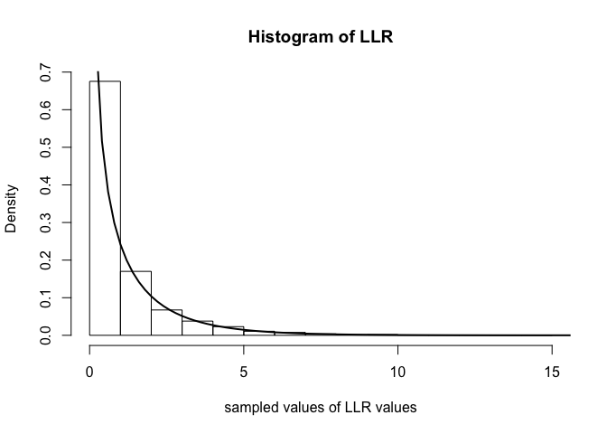
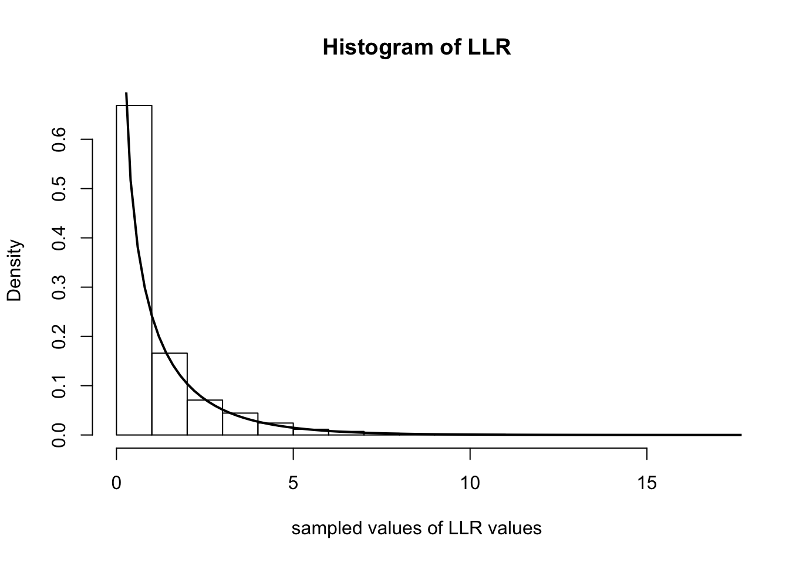

Last updated: 2016-01-14
Code version: 3bcbe0da832c8dcfbd6509c8151d02f4afcacf8b
``` ## Pre-requisites
This document assumes familiarity with the concepts of likelihoods, likelihood ratios, and hypothesis testing.
||||||| merged common ancestorsThis document assumes familiarity with the concepts of likelihoods, likelihood ratios, and hypothesis testing.
Last updated: 2016-01-19
Code version: eff1009a93d9442a852a8fa6039a582524522f8e
``` ## Pre-requisites
This document assumes familiarity with the concepts of likelihoods, likelihood ratios, and hypothesis testing.
>>>>>>> upstream/gh-pagesWhen performing a statistical hypothesis test, like comparing two models, if the hypotheses completely specify the probability distributions, these hypotheses are called simple hypotheses. For example, suppose we observe \(X_1,\ldots,X_n\) from a normal distribution with known variance and we want to test whether the true mean is equal to \(\mu_0\) or \(\mu_1\). One hypothesis \(H_0\) might be that the distribution has mean \(\mu_0\), and \(H_1\) might be that the mean is \(\mu_1\). Since these hypotheses completely specify the distribution of the \(X_i\), they are called simple hypotheses.
Now suppose \(H_0\) is again that the true mean, \(\mu\), is equal to \(\mu_0\), but \(H_1\) was that \(\mu > \mu_0\). In this case, the \(H_0\) is still simple, but \(H_1\) does not completely specify a single probability distribution. It specifies a set of distributions, and is therefore an example of a composite hypothesis. In most practical scenarios, both hypotheses are rarely simple.
As seen in the fiveMinuteStats on likelihood ratios, given the observed data \(X_1\ldots,X_n\), we can measure the relative plausibility of \(H_1\) to \(H_0\) by the log-likelihood ratio: \[\log\left(\frac{f(X_1,\ldots,X_n|H_1)}{f(X_1,\ldots,X_n|H_0)}\right)\]
The log-likelihood ratio could help us choose which model (\(H_0\) or \(H_1\)) is a more likely explanation for the data. One common question is this: what constitues are large likelihood ratio? Wilks’s Theorem helps us answer this question – but first, we will define the notion of a generalized log-likelihood ratio.
||||||| merged common ancestorsWhen performing a statistical hypothesis test, like comparing two models, if the hypotheses completely specify the probability distributions, these hypotheses are called simple hypotheses. For example, suppose we observe X1, …, Xn from a normal distribution with known variance and we want to test whether the true mean is equal to μ0 or μ1. One hypothesis H0 might be that the distribution has mean μ0, and H1 might be that the mean is μ1. Since these hypotheses completely specify the distribution of the Xi, they are called simple hypotheses.
Now suppose H0 is again that the true mean, μ, is equal to μ0, but H1 was that μ > μ0. In this case, the H0 is still simple, but H1 does not completely specify a single probability distribution. It specifies a set of distributions, and is therefore an example of a composite hypothesis. In most practical scenarios, both hypotheses are rarely simple.
As seen in the fiveMinuteStats on likelihood ratios, given the observed data X1…,Xn, we can measure the relative plausibility of H1 to H0 by the log-likelihood ratio:
$$\log\left(\frac{f(X_1,\ldots,X_n|H_1)}{f(X_1,\ldots,X_n|H_0)}\right)$$
The log-likelihood ratio could help us choose which model (H0 or H1) is a more likely explanation for the data. One common question is this: what constitues are large likelihood ratio? Wilks’s Theorem helps us answer this question – but first, we will define the notion of a generalized log-likelihood ratio.
=======When performing a statistical hypothesis test, like comparing two models, if the hypotheses completely specify the probability distributions, these hypotheses are called simple hypotheses. For example, suppose we observe \(X_1,\ldots,X_n\) from a normal distribution with known variance and we want to test whether the true mean is equal to \(\mu_0\) or \(\mu_1\). One hypothesis \(H_0\) might be that the distribution has mean \(\mu_0\), and \(H_1\) might be that the mean is \(\mu_1\). Since these hypotheses completely specify the distribution of the \(X_i\), they are called simple hypotheses.
Now suppose \(H_0\) is again that the true mean, \(\mu\), is equal to \(\mu_0\), but \(H_1\) was that \(\mu > \mu_0\). In this case, the \(H_0\) is still simple, but \(H_1\) does not completely specify a single probability distribution. It specifies a set of distributions, and is therefore an example of a composite hypothesis. In most practical scenarios, both hypotheses are rarely simple.
As seen in the fiveMinuteStats on likelihood ratios, given the observed data \(X_1\ldots,X_n\), we can measure the relative plausibility of \(H_1\) to \(H_0\) by the log-likelihood ratio: \[\log\left(\frac{f(X_1,\ldots,X_n|H_1)}{f(X_1,\ldots,X_n|H_0)}\right)\]
The log-likelihood ratio could help us choose which model (\(H_0\) or \(H_1\)) is a more likely explanation for the data. One common question is this: what constitues are large likelihood ratio? Wilks’s Theorem helps us answer this question – but first, we will define the notion of a generalized log-likelihood ratio.
>>>>>>> upstream/gh-pagesLet’s assume we are dealing with distributions parameterized by \(\theta\). To generalize the case of simple hypotheses, let’s assume that \(H_0\) specifies that \(\theta\) lives in some set \(\Theta_0\) and \(H_1\) specifies that \(\theta \in \Theta_1\). Let \(\Omega = \Theta_0 \cup \Theta_1\). A somewhat natural extension to the likelihood ratio test statistic we discussed above is the generalized log-likehood ratio: \[\Lambda^* = \log{\frac{\max_{\theta \in \Theta_1}f(X_1,\ldots,X_n|\theta)}{\max_{\theta \in \Theta_0}f(X_1,\ldots,X_n|\theta)}}\]
||||||| merged common ancestorsLet’s assume we are dealing with distributions parameterized by θ. To generalize the case of simple hypotheses, let’s assume that H0 specifies that θ lives in some set Θ0 and H1 specifies that θ ∈ Θ1. Let Ω = Θ0 ∪ Θ1. A somewhat natural extension to the likelihood ratio test statistic we discussed above is the generalized log-likehood ratio:
$$\Lambda^* = \log{\frac{\max_{\theta \in \Theta_1}f(X_1,\ldots,X_n|\theta)}{\max_{\theta \in \Theta_0}f(X_1,\ldots,X_n|\theta)}}$$
Let’s assume we are dealing with distributions parameterized by \(\theta\). To generalize the case of simple hypotheses, let’s assume that \(H_0\) specifies that \(\theta\) lives in some set \(\Theta_0\) and \(H_1\) specifies that \(\theta \in \Theta_1\). Let \(\Omega = \Theta_0 \cup \Theta_1\). A somewhat natural extension to the likelihood ratio test statistic we discussed above is the generalized log-likehood ratio: \[\Lambda^* = \log{\frac{\max_{\theta \in \Theta_1}f(X_1,\ldots,X_n|\theta)}{\max_{\theta \in \Theta_0}f(X_1,\ldots,X_n|\theta)}}\]
>>>>>>> upstream/gh-pagesFor technical reasons, it is preferable to use the following related quantity:
<<<<<<< HEAD\[\Lambda_n = 2\log{\frac{\max_{\theta \in \Omega}f(X_1,\ldots,X_n|\theta)}{\max_{\theta \in \Theta_0}f(X_1,\ldots,X_n|\theta)}}\]
Just like before, larger values of \(\Lambda_n\) provide stronger evidence against \(H_0\).
||||||| merged common ancestors
$$\Lambda_n = 2\log{\frac{\max_{\theta \in \Omega}f(X_1,\ldots,X_n|\theta)}{\max_{\theta \in \Theta_0}f(X_1,\ldots,X_n|\theta)}}$$
Just like before, larger values of Λn provide stronger evidence against H0.
=======\[\Lambda_n = 2\log{\frac{\max_{\theta \in \Omega}f(X_1,\ldots,X_n|\theta)}{\max_{\theta \in \Theta_0}f(X_1,\ldots,X_n|\theta)}}\]
Just like before, larger values of \(\Lambda_n\) provide stronger evidence against \(H_0\).
>>>>>>> upstream/gh-pagesSuppose that the dimension of \(\Omega = v\) and the dimension of \(\Theta_0 = r\). Under regularity conditions and assuming \(H_0\) is true, the distribution of \(\Lambda_n\) tends to a chi-squared distribution with degrees of freedom equal to \(v-r\) as the sample size tends to infinity.
With this theorem in hand (and for \(n\) large), we can compare the value of our log-likehood ratio to the expected values from a \(\chi^2_{v-r}\) distribution.
||||||| merged common ancestorsSuppose that the dimension of Ω = v and the dimension of Θ0 = r. Under regularity conditions and assuming H0 is true, the distribution of Λn tends to a chi-squared distribution with degrees of freedom equal to v − r as the sample size tends to infinity.
With this theorem in hand (and for n large), we can compare the value of our log-likehood ratio to the expected values from a χv − r2 distribution.
=======Suppose that the dimension of \(\Omega = v\) and the dimension of \(\Theta_0 = r\). Under regularity conditions and assuming \(H_0\) is true, the distribution of \(\Lambda_n\) tends to a chi-squared distribution with degrees of freedom equal to \(v-r\) as the sample size tends to infinity.
With this theorem in hand (and for \(n\) large), we can compare the value of our log-likehood ratio to the expected values from a \(\chi^2_{v-r}\) distribution.
>>>>>>> upstream/gh-pagesAssume we observe data \(X_1,\ldots X_n\) and consider the hypotheses \(H_0: \lambda = \lambda_0\) and \(H_1: \lambda \neq \lambda_0\). The likelihood is: \[L(\lambda|X_1,\ldots,X_n) = \frac{\lambda^{\sum X_i}e^{-n\lambda}}{\prod_i^n X_i!}\]
Note that \(\Theta_1\) in this case is the set of all \(\lambda \neq \lambda_0\). In the numerator of the expression for \(\Lambda_n\), we seek \(\max_{\theta \in \Omega}f(X_1,\ldots,X_n|\theta)\). This is just the maximum likelihood estimate of \(\lambda\) which we derived in this note. The MLE is simply the sample average \(\bar{X}\). The likelihood ratio is therefore: \[\frac{L(\lambda=\bar{X}|X_1,\ldots,X_n)}{L(\lambda=\lambda_0|X_1,\ldots,X_n)} = \frac{\bar{X}^{\sum X_i}e^{-n\bar{X}}}{\prod_i^n X_i!}\frac{\prod_i^n X_i!}{\lambda_0^{\sum X_i}e^{-n\lambda_0}} = \big ( \frac{\bar{X}}{\lambda_0}\big )^{\sum_i X_i}e^{n(\lambda_0 - \bar{X})}\]
which means that \(\Lambda_n\) is \[ \Lambda_n = 2\log{\left( \big ( \frac{\bar{X}}{\lambda_0}\big )^{\sum_i X_i}e^{n(\lambda_0 - \bar{X})} \right )} = 2n \left ( \bar{X}\log{\left(\frac{\bar{X}}{\lambda_0}\right)} + \lambda_0 - \bar{X} \right )\]
In this example we have that \(v\), the dimension of \(\Omega\), is 1 (any positive real number) and \(r\), the dimension of \(\Theta_0\) is 0 (it’s just a single point). Hence, the degrees of freedom of the asymptotic \(\chi^2\) distribution is \(v-r = 1\). Therefore, Wilk’s Theorem tells us that \(\Lambda_n\) tends to a \(\chi^2_1\) distribution as \(n\) tends to infinity.
Below we simulate computing \(\Lambda_n\) over 5000 experiments. In each experiment, we observe 500 random variables distributed as Poisson(\(0.4\)). We then plot the histogram of the \(\Lambda_n\)s and overlay the \(\chi^2_1\) density with a solid line.
||||||| merged common ancestorsAssume we observe data X1, …Xn and consider the hypotheses H0 : λ = λ0 and H1 : λ ≠ λ0. The likelihood is:
$$L(\lambda|X_1,\ldots,X_n) = \frac{\lambda^{\sum X_i}e^{-n\lambda}}{\prod_i^n X_i!}$$
Note that Θ1 in this case is the set of all λ ≠ λ0. In the numerator of the expression for Λn, we seek maxθ ∈ Ωf(X1, …, Xn|θ). This is just the maximum likelihood estimate of λ which we derived in this note. The MLE is simply the sample average $\bar{X}$. The likelihood ratio is therefore:
$$\frac{L(\lambda=\bar{X}|X_1,\ldots,X_n)}{L(\lambda=\lambda_0|X_1,\ldots,X_n)} = \frac{\bar{X}^{\sum X_i}e^{-n\bar{X}}}{\prod_i^n X_i!}\frac{\prod_i^n X_i!}{\lambda_0^{\sum X_i}e^{-n\lambda_0}} = \big ( \frac{\bar{X}}{\lambda_0}\big )^{\sum_i X_i}e^{n(\lambda_0 - \bar{X})}$$
which means that Λn is
$$ \Lambda_n = 2\log{\left( \big ( \frac{\bar{X}}{\lambda_0}\big )^{\sum_i X_i}e^{n(\lambda_0 - \bar{X})} \right )} = 2n \left ( \bar{X}\log{\left(\frac{\bar{X}}{\lambda_0}\right)} + \lambda_0 - \bar{X} \right )$$
In this example we have that v, the dimension of Ω, is 1 (any positive real number) and r, the dimension of Θ0 is 0 (it’s just a single point). Hence, the degrees of freedom of the asymptotic χ2 distribution is v − r = 1. Therefore, Wilk’s Theorem tells us that Λn tends to a χ12 distribution as n tends to infinity.
Below we simulate computing Λn over 5000 experiments. In each experiment, we observe 500 random variables distributed as Poisson(0.4). We then plot the histogram of the Λns and overlay the χ12 density with a solid line.
=======Assume we observe data \(X_1,\ldots X_n\) and consider the hypotheses \(H_0: \lambda = \lambda_0\) and \(H_1: \lambda \neq \lambda_0\). The likelihood is: \[L(\lambda|X_1,\ldots,X_n) = \frac{\lambda^{\sum X_i}e^{-n\lambda}}{\prod_i^n X_i!}\]
Note that \(\Theta_1\) in this case is the set of all \(\lambda \neq \lambda_0\). In the numerator of the expression for \(\Lambda_n\), we seek \(\max_{\theta \in \Omega}f(X_1,\ldots,X_n|\theta)\). This is just the maximum likelihood estimate of \(\lambda\) which we derived in this note. The MLE is simply the sample average \(\bar{X}\). The likelihood ratio is therefore: \[\frac{L(\lambda=\bar{X}|X_1,\ldots,X_n)}{L(\lambda=\lambda_0|X_1,\ldots,X_n)} = \frac{\bar{X}^{\sum X_i}e^{-n\bar{X}}}{\prod_i^n X_i!}\frac{\prod_i^n X_i!}{\lambda_0^{\sum X_i}e^{-n\lambda_0}} = \big ( \frac{\bar{X}}{\lambda_0}\big )^{\sum_i X_i}e^{n(\lambda_0 - \bar{X})}\]
which means that \(\Lambda_n\) is \[ \Lambda_n = 2\log{\left( \big ( \frac{\bar{X}}{\lambda_0}\big )^{\sum_i X_i}e^{n(\lambda_0 - \bar{X})} \right )} = 2n \left ( \bar{X}\log{\left(\frac{\bar{X}}{\lambda_0}\right)} + \lambda_0 - \bar{X} \right )\]
In this example we have that \(v\), the dimension of \(\Omega\), is 1 (any positive real number) and \(r\), the dimension of \(\Theta_0\) is 0 (it’s just a single point). Hence, the degrees of freedom of the asymptotic \(\chi^2\) distribution is \(v-r = 1\). Therefore, Wilk’s Theorem tells us that \(\Lambda_n\) tends to a \(\chi^2_1\) distribution as \(n\) tends to infinity.
Below we simulate computing \(\Lambda_n\) over 5000 experiments. In each experiment, we observe 500 random variables distributed as Poisson(\(0.4\)). We then plot the histogram of the \(\Lambda_n\)s and overlay the \(\chi^2_1\) density with a solid line.
>>>>>>> upstream/gh-pagesnum.iterations <- 5000
lambda.truth <- 0.4
num.samples.per.iter <- 500
samples <- numeric(num.iterations)
for(iter in seq_len(num.iterations)) {
data <- rpois(num.samples.per.iter, lambda.truth)
samples[iter] <- 2*num.samples.per.iter*(mean(data)*log(mean(data)/lambda.truth) + lambda.truth - mean(data))
}
hist(samples, freq=F, main='Histogram of LLR', xlab='sampled values of LLR values')
curve(dchisq(x, 1), 0, 20, lwd=2, xlab = "", ylab = "", add = T)
sessionInfo()R version 3.2.2 (2015-08-14)
Platform: x86_64-apple-darwin13.4.0 (64-bit)
Running under: OS X 10.10.5 (Yosemite)
locale:
[1] en_US.UTF-8/en_US.UTF-8/en_US.UTF-8/C/en_US.UTF-8/en_US.UTF-8
attached base packages:
[1] stats graphics grDevices utils datasets methods base
other attached packages:
[1] knitr_1.11
loaded via a namespace (and not attached):
[1] magrittr_1.5 formatR_1.2.1 tools_3.2.2 htmltools_0.3
[5] yaml_2.1.13 stringi_1.0-1 rmarkdown_0.9.2 stringr_1.0.0
[9] digest_0.6.8 evaluate_0.8 
=======sessionInfo()R version 3.2.3 (2015-12-10)
Platform: x86_64-apple-darwin13.4.0 (64-bit)
Running under: OS X 10.11.2 (El Capitan)
locale:
[1] en_US.UTF-8/en_US.UTF-8/en_US.UTF-8/C/en_US.UTF-8/en_US.UTF-8
attached base packages:
[1] stats graphics grDevices utils datasets methods base
other attached packages:
[1] knitr_1.10.5
loaded via a namespace (and not attached):
[1] magrittr_1.5 formatR_1.2 tools_3.2.3 htmltools_0.2.6
[5] yaml_2.1.13 stringi_0.5-5 rmarkdown_0.7 stringr_1.0.0
[9] digest_0.6.8 evaluate_0.7